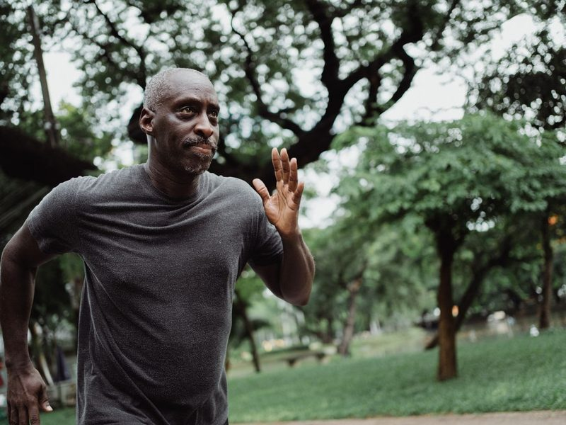
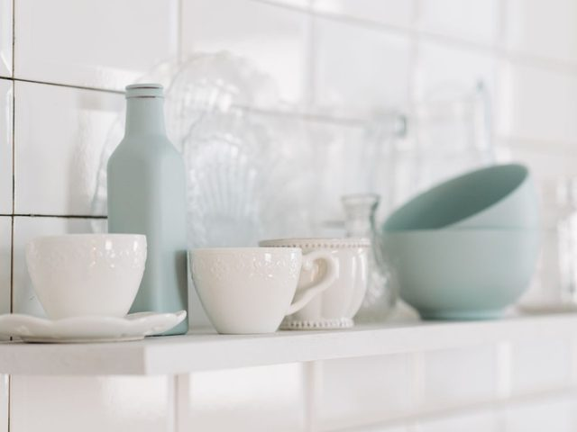
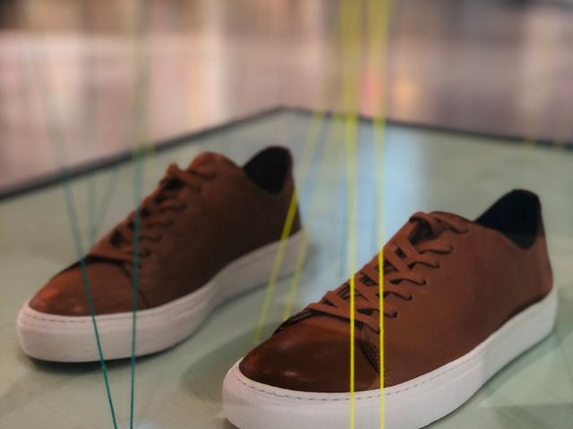
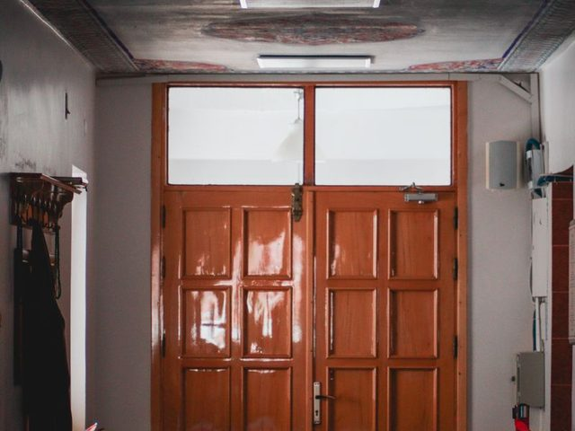

VOCABULARY · WORD UP 單字複習 UNIT 42
S-II．S 開頭（二）
WORD UP「S-II」的 44 個字（sell 到 side）。紅色＝要複習，藍色標籤＝WORD UP 標熟記、還要在這裡考對。
共 44 個單字．點 🔊 聽發音

1sellv.
賣
三態 sell-sold-sold
They sell fruit at the market.他們在市場賣水果。
2semestern.
學期
The new semester starts in September.新學期九月開始。
3sendv.
寄；送
三態 send-sent-sent
I sent a card to my teacher.我寄了一張卡片給老師。
4sensen.
感覺；意義
make sense 有道理
That makes sense.那很有道理。
5separateadj./v.
分開的；分開
Separate the eggs into two bowls.把蛋分到兩個碗裡。

6Septembern.
九月
School starts in September.九月開學。

7seriousadj.
嚴重的；認真的
Are you serious?你是認真的嗎？
8servantn.
僕人
The king had many servants.國王有很多僕人。
9servev.
服務；供應（餐點）
Dinner is served at six.晚餐六點供應。
10servicen.
服務
The service at this hotel is great.這家飯店的服務很好。

11setv./n.
放置；設定；一套
三態都是 set；set up 設立
Set the alarm for six.把鬧鐘設在六點。
12sevenn.
七
There are seven days in a week.一週有七天。
13seventeenn.
十七
My cousin is seventeen.我表姊十七歲。

14seventyn.
七十
Grandpa is seventy years old.爺爺七十歲。

15severaladj.
幾個
接複數名詞
I have several friends in Tainan.我在台南有幾個朋友。

16shakev.
搖動；握（手）
三態 shake-shook-shaken；shake hands 握手
They shook hands.他們握了手。
17shallaux.
將；要不要
Shall we…? 我們…好嗎
Shall we dance?我們來跳舞好嗎？

18shapen.
形狀；狀態
in good shape 身材好
What shape is it? — It's a circle.它是什麼形狀？——圓形。

19sharev.
分享
share A with B
Share your toys with your sister.跟妹妹分享你的玩具。
20sharkn.
鯊魚
Sharks have sharp teeth.鯊魚有尖銳的牙齒。
21sharpadj.
尖銳的；鋒利的
Be careful. The knife is sharp.小心，這把刀很利。

22sheepn.
綿羊
單複數同形
There are ten sheep on the farm.農場上有十隻羊。

23sheetn.
一張（紙）；床單
a sheet of paper
Take a sheet of paper.拿一張紙。

24shelfn.
架子
複數 shelves
Put the books on the shelf.把書放在架子上。

25shinev.
發光；照耀
The sun is shining.陽光普照。

26shipn.
船
by ship
The ship is leaving the port.船正在離港。
27shirtn.
襯衫
He wears a white shirt to school.他穿白襯衫上學。
28shockn./v.
震驚
shocked 感到震驚的
The news shocked everyone.那個消息讓大家很震驚。

29shoen.
鞋子
常用複數 shoes；a pair of shoes
Take off your shoes, please.請脫鞋。
30shootv.
射擊；投籃；拍攝
三態 shoot-shot-shot
He shot the ball and scored.他投籃得分。

31shopn./v.
商店；購物
go shopping 去逛街
Let's go shopping.我們去逛街吧。

32shoren.
岸；海岸
We walked along the shore.我們沿著海岸散步。

33shortadj.
短的；矮的
My hair is short.我的頭髮很短。
34shotn.
射擊；投籃；打針
get a shot 打針
I got a flu shot today.我今天打了流感疫苗。
35shouldaux.
應該
+ 原形
You should go to bed early.你應該早點睡。
36shouldern.
肩膀
He put his hand on my shoulder.他把手放在我肩上。
37shoutv.
大叫
shout at + 人 對…大吼
Don't shout at me.不要對我大吼。
38showv./n.
展示；表演
三態 show-showed-shown
Show me your new phone.給我看你的新手機。
39showern.
淋浴；陣雨
take a shower 淋浴
I take a shower every night.我每天晚上洗澡。

40shrimpn.
蝦子
I like fried shrimp.我喜歡炸蝦。

41shutv.
關上
三態都是 shut；shut up 閉嘴
Shut the door, please.請把門關上。
42shyadj.
害羞的
The new student is very shy.那個新同學很害羞。
43sickadj.
生病的
be sick in bed 生病臥床
I was sick yesterday.我昨天生病了。
44siden.
邊；側
side by side 並肩
Stay by my side.待在我身邊。
FOCUS
重點整理
| 說法 | 中文 | 例子 |
|---|---|---|
| share A with B | 和 B 分享 A | share food with friends |
| make sense | 有道理 | It makes sense. |
| Shall we…? | 我們…好嗎？ | Shall we go? |
| shake hands | 握手 | shake hands with him |
| shout at + 人 | 對某人大吼 | shout at the dog |
| take a shower | 淋浴 | take a quick shower |
| several + 複數名詞 | 幾個… | several books |
sheep 單複數同形；shelf → shelves；sell-sold、send-sent、shoot-shot、shake-shook。